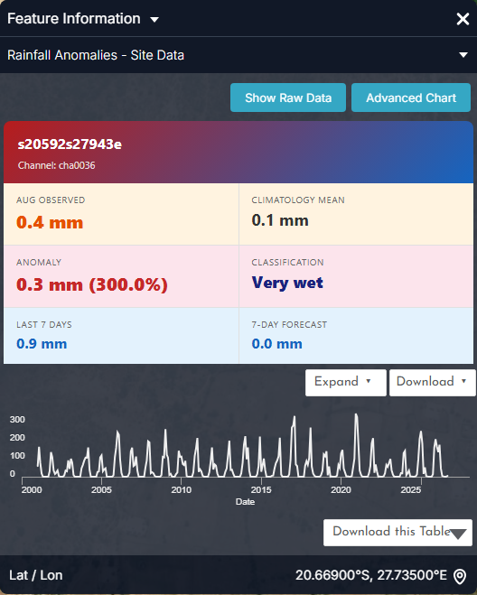
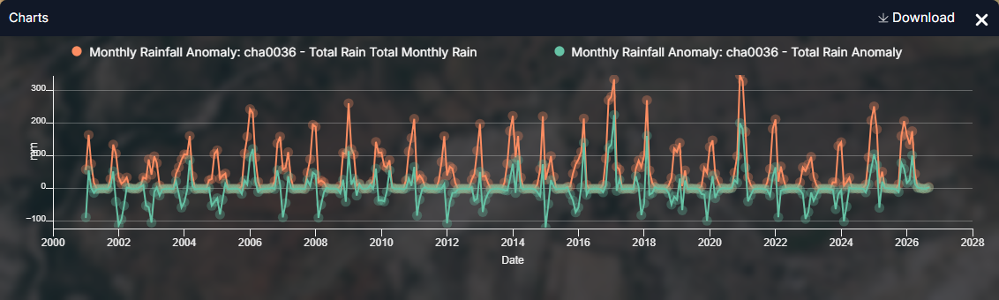
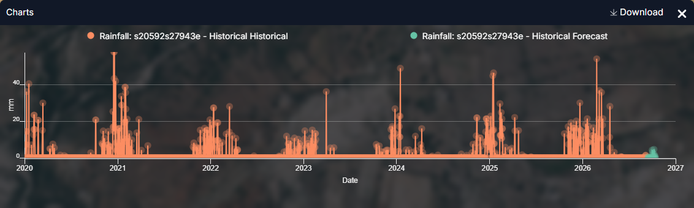
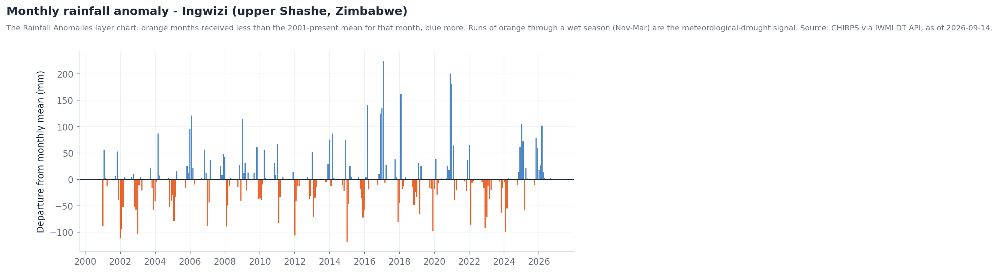
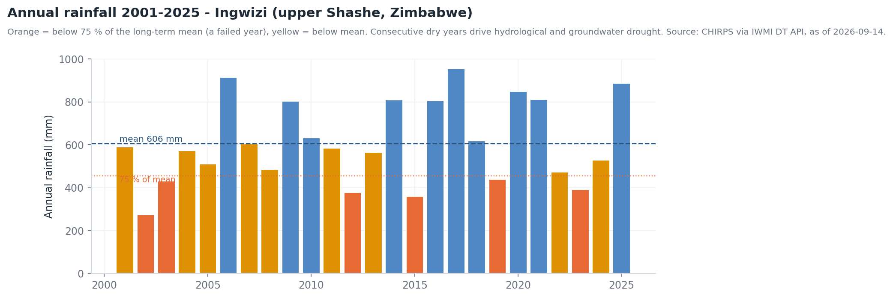
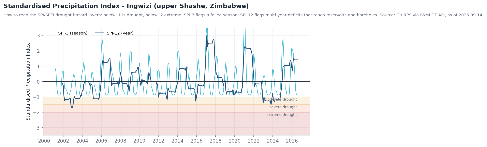

Droughts¶
The question¶
An agricultural extension officer, a water utility or a basin committee wants to know whether a drought is developing, how severe it is compared with past years, which sectors are at risk, and what the coming season looks like.
Drought builds in stages, and the catalogue is organised the same way: meteorological (rain), then soil and vegetation stress, then hydrological (rivers and groundwater), then sectoral risk.
| Who | Decision | Cadence |
|---|---|---|
| Extension services and farmer organisations | Planting advice, drought-tolerant seed, livestock destocking | Monthly through the season |
| Water utilities and municipalities | Restrictions, borehole rotation, tanker planning | Monthly; weekly in a declared drought |
| Basin committees / LIMCOM | Declare drought status, trigger cross-border allocation rules | Seasonal (Oct, Jan, Apr) |
| Food-security and humanitarian analysts (IPC, WFP) | Target assistance by district | Seasonal |
At a glance — indicator thresholds used in the portal
- VCI < 35 — vegetation in potential drought stress; crop-failure risk (from the Vegetation Condition Index description).
- SPI / SPEI < −1 — moderate drought; < −1.5 severe; < −2 extreme.
- Annual rainfall < 75 % of the long-term mean — a failed year. At the Ingwizi station (upper Shashe) the mean is 606 mm; 2002 recorded 271 mm.
- E-flow Alert Level 3–5 — the river has crossed into hydrological drought (see Environmental flows).
How the workflow fits together¶
flowchart TD
A[Vegetation<br/>VCI · NDVI Anomaly DEA] --> B{VCI < 35 over<br/>cropland?}
B -- no --> Z[Monitor monthly]
B -- yes --> C[Rainfall cause<br/>CHIRPS · Rainfall Anomalies · SPEI 3-month]
C --> D[Soil<br/>SMAP Root Zone Soil Moisture]
D --> E[Rivers & groundwater<br/>Eflow Warnings · Groundwater Drought Risk]
E --> F[Sectoral risk<br/>Drought Risk – Agriculture / Water Sector]
F --> G[Outlook<br/>Rainfall Anomaly Forecast · Seasonal Forecast 7-month]
G --> H{Dry outlook on<br/>existing deficit?}
H -- yes --> I[Early action:<br/>declare, restrict, assist]
H -- no --> ZData you will use¶
| Stage | Dataset | Where in the catalogue | Notes |
|---|---|---|---|
| Rain deficit | CHIRPS Historical Rainfall · Number of Rainy Days · Rainfall Anomalies | Drought Monitoring & Risk Assessment → Meteorological Drought | CHIRPS: ~5 km, 1981–present; anomaly circles are clickable (chart) |
| Rain deficit (indices) | Drought Hazard – SPEI 3-month / 6-month / 12-month (2010–2021) | → Meteorological Drought | Climatology baseline, not live |
| Soil | SMAP Surface Soil Moisture (L4, Daily) · SMAP Root Zone Soil Moisture (L4, Daily) · SMAP-Sentinel High-Res Soil Moisture (1 km) | → Soil Moisture | L4 is ~9 km daily; 1 km product is sharper but less frequent |
| Vegetation | The Vegetation Condition Index (VCI) · MODIS NDVI 16-Day Composite · VIIRS NDVI 8-Day Composite · NDVI Anomaly (DEA) | → Vegetation & Crop Stress | VCI 0–100, normalised against history; updated monthly |
| Water stress | Evaporative Stress Index Africa | → Evaporative Stress & Water Use | Ratio of actual to potential ET |
| Rivers | E-flow Monitoring and Forecasting · Eflow Alert Levels · Eflow Warnings | → Hydrological Drought & E-flows | 31 sites, alert levels 1–5 |
| Groundwater | Groundwater Drought Risk (Updated) · Groundwater Level Points | Water Resources → Groundwater | Lags surface drought by months |
| Risk by sector | Drought Risk – Agriculture / Food & Nutrition / Water Sector (3, 6, 12-month) | → Sectoral Drought Risk | Hazard × exposure × vulnerability |
| Outlook | Limpopo Rainfall Anomaly Forecast · Limpopo Temperature Anomaly Forecast · Seasonal Forecast Anomaly (7-month) · Sub-Seasonal Outlook (5–6 weeks) | Natural Basin Characteristic → Climate; Flood Monitoring → Seasonal & Sub-Seasonal | Probabilistic anomalies |
Walkthrough¶
- Start with vegetation — the most visible signal. Explore data → search
VCI→ add The Vegetation Condition Index (VCI). Use the timeline to compare this month with the same month in previous years; VCI is already normalised against history, so low values mean worse than usual, not just dry season. Values below 35 over cropland are the trigger. - Confirm with NDVI Anomaly (DEA) (add it, use Compare against VCI). Agreement between two independent vegetation products is a robust drought signal; disagreement usually means harvest, fire or clearing.
- Check the cause — rainfall. Add CHIRPS Historical Rainfall and step the timeline back through the season; add Rainfall Anomalies and click a station circle for its chart (Figure 1). Then add Drought Hazard – SPEI 3-month for the standardised deficit.
- Check the soil. Add SMAP Root Zone Soil Moisture (L4, Daily). Root-zone deficit, not just surface dryness, is what limits crops; surface moisture recovers with one shower, root-zone moisture does not.
- Check the rivers. Add Eflow Warnings and Eflow Alert Levels, then E-flow Monitoring and Forecasting and click a site for its chart. Rivers below environmental-flow levels mark the transition to hydrological drought (see Environmental flows).
- Check storage. Add Dams & Reservoirs Basin Level Estimates: dams marked Low or Critical (Middle Letaba was at 10.5 % in July 2026) show where supply is already constrained (see Reservoir monitoring).
- Translate to risk. Add Drought Risk – Agriculture (3-month) and Drought Risk – Water Sector (3-month) with Population underneath to see where stressed conditions meet people.
- Look ahead. Add Limpopo Rainfall Anomaly Forecast and the Seasonal Forecast Anomaly (7-month): a dry outlook on top of an existing deficit is the trigger for early action.
- Save the sequence as a Story — one scene per stage makes a compelling briefing.
Reading the charts¶
The figures below are the portal's own charts, captured from the Feature Information panel (click a feature) and from the Charts dock that opens with the panel's Expand button. Every station, dam and site chart in the portal follows the same pattern: a summary card, a preview chart, Expand to enlarge, Download for the CSV.


- Beware percentage anomalies in the dry season: 0.4 mm observed against a 0.1 mm mean reads +300 %, Very wet — meaningless in August. Judge the class in the wet-season months (Nov–Mar), or read the mm anomaly.
- The preview chart shows monthly totals since 2001; the shape of each summer peak (tall and narrow, or low and flat) is the first visual sign of a good or failed season.


- Runs of green below zero through a whole summer are the meteorological-drought signal: 2002–03, 2005, 2012, 2015–16 and 2023–24 all show it.
- The large positive spikes (Feb 2017, Jan 2021) end meteorological drought in one month; rivers, dams and boreholes take a season or more to follow.
- Download the CSV to compute a 3- or 12-month running total yourself if you need an SPI-like index for the current season (the SPEI layers stop in 2021).


- Daily data show dry-spell length inside a season, which monthly totals hide: the 2023/24 summer has few and small events compared with 2020/21.
- The forecast points at the right edge are the sub-seasonal outlook for the station; a flat green tail in November means a late onset.

- When rainfall and vegetation indices agree on drought, this is the confirmation: flows sitting on or below the requirement line in Expand (see Environmental flows).
Longer-term context (charts derived from the same API data)
These are not portal screens: they were rendered from the same series with tools/use_case_charts.py to show what the portal's series look like over decades.






Indicators and what to do¶
| Stage | Indicator | Threshold | Typical action |
|---|---|---|---|
| Meteorological | SPI-3 / SPEI-3 | < −1.0 during Dec–Feb | Advisory to farmers; review planting windows |
| Meteorological | Annual rainfall | < 75 % of mean | Prepare drought declaration |
| Agricultural | VCI | < 35 over cropland at peak season (Feb–Mar) | Crop-failure warning; input / feed support |
| Agricultural | SMAP root-zone moisture | Below seasonal norm for > 4 weeks | Irrigation scheduling advice; livestock water points |
| Hydrological | E-flow Alert Level | Level 3+ at multiple sites | Abstraction limits; reservoir release rules |
| Hydrological | Reservoir storage | < 25 % (Low), < 10 % (Critical) | Water restrictions; emergency supply |
| Groundwater | Groundwater Drought Risk | High class expanding | Borehole monitoring; deepen / rotate boreholes |
| Outlook | Seasonal Forecast Anomaly | Dry tercile > 40 % probability with existing deficit | Early action financing; pre-position assistance |
Worked example — assessing the 2023/24 season in retrospect¶
- Add The Vegetation Condition Index (VCI) and set the timeline to March 2024. Large areas of southern Zimbabwe and Limpopo Province sit below 35 — peak-season stress.
- Add Rainfall Anomalies, click the Ingwizi circle: the chart (Figure 1) shows Nov 2023–Feb 2024 all orange — a failed season. Figure 3's SPI-12 has crossed −1.5 (severe).
- Add SMAP Root Zone Soil Moisture (L4, Daily) for February 2024 — the root zone confirms the rainfall deficit reached the crop.
- Add Eflow Alert Levels: dry-season 2024 sites on the Shashe, Mzingwane and Sand rivers show Level 4–5.
- Add Drought Risk – Agriculture (6-month): risk concentrates where the stressed VCI overlaps communal farming areas. That map, captured as a Story, is the briefing.
- Add Limpopo Rainfall Anomaly Forecast for the next season (2024/25): a wet anomaly — and Figure 2 confirms 2025 came in well above the mean, with the Beit Bridge flood of February 2025 (see Floods).
Briefing checklist¶
- Current VCI class over the main cropping areas, with month and year
- Rainfall deficit: seasonal total vs mean, and SPI/SPEI value at 3 and 12 months
- Root-zone soil moisture relative to the seasonal norm
- E-flow alert levels and reservoir storage class per sub-basin
- Sectoral risk classes (agriculture, water, food & nutrition) by district
- Seasonal outlook and its confidence
- Story link reproducing the scenes
Limits to keep in mind¶
- SPEI hazard layers cover 2010–2021 — a climatology baseline, not a live index. Use CHIRPS, the Rainfall Anomalies charts and the anomaly forecasts for the current season.
- NDVI/VCI respond to any vegetation change (harvest, fire, land clearing), not only drought — cross-check with rainfall.
- SMAP is coarse (the 1 km SMAP-Sentinel product is sharper but less frequent); it saturates in wetlands and irrigated fields.
- Seasonal forecasts are probabilistic anomalies; read them as odds, not predictions.
- Station charts (rainfall anomaly, e-flow) need a signed-in session.
Related¶
Environmental flows · Reservoir monitoring · Irrigation water use · Workbench — time series